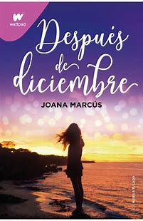
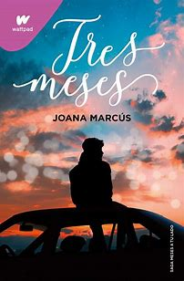

La vida universitaria de Jenna Brown no está saliendo como imaginaba. Se ha alejado de su familia, sus
amigos y la relación con su novio ahora es muy distinta a lo que conocía, todo cambia a su alrededor y lo que
menos esperaba era acercarse a una persona nueva, pero, en una relación a distancia…todo se vale ¿no?
OPINIONES
★★★★★ Hola? el mejor libro de romance que he leído. El final es espectacular a pesar de que es triste, te deja con ganas de leer el siguiente y el siguiente. Una maravilla. un buen libro para incorporarte en la lectura, o en mi caso, a incorporarte en el romance...
★★★★★ El libro más bonito que he leído en mi vida. Me lo volvería a leer mil veces
★★★★★ Lo volvería a leer sin dudar
DESPUES DE DICIEMBRE

SINOPSIS
A Jenna Brown el último año se le ha hecho eterno. superarlo, centrarse en sí misma y convertirse en una
Jenna renovada que tiene un nuevo objetivo vital: terminar los estudios. Aunque suponga volver al lugar donde
todo empezó y que tantos recuerdos le evoca. tomó un año atrás.
OPINIONES
★★★★★ Ha superado todas mis expectativas, es imprescindible leer esta saga, cada libro mejor al anterior, me han encantado todos, una gran escritora.
★★★★★ Me ha encantado y ha superado todas mis expectativas. Una escritora genial. Los tres merecen la pena leer
★★★★★ Me enamoro esta segunda parte de la saga meses a tu lado, cien por cien recomendada
TRES MESES

SINOPSIS
CONOCER A UNA PERSONA TE PUEDE CAMBIAR LA VIDA. Jack Ross no creía en el compromiso, y hasta ahora
no le había ido mal. La fantasía del amor verdadero, de ese cruce de miradas que te cambia la vida por
completo, no era más que un argumento sobreexplotado de las películas que más solía criticar.
OPINIONES
★★★★★ Me gusta muchísimo que lo narra Ross. Es impresionante, te metes tanto en las historias que parece que todo alrededor desaparece. Me encanta este personaje.
★★★★★ Me EN-CAN-TÓ!!!!❤️❤️❤️❤️ De los mejores libros que me he leído de este género (y mira q he leído muchos, pero este es una pasada!)!😊😊😊😊
★★★★★ Brutal,el mejor de la saga
LAS LUCES DE FEBRERO
SINOPSIS
Esta historia nos sumerge en la vida de Ellie Ross, una joven apasionada por el baloncesto y determinada a
alcanzar el éxito en su deporte favorito. A pesar de tener que enfrentarse a las normas y ser la primera chica en
el equipo, Ellie no se detiene ante los obstáculos que se le presentan. Sin embargo, todo cambia cuando se ve
obligada a compartir equipo con Víctor, un individuo que parece empeñado en quitarle el control que tanto
valora. En medio de disputas y desafíos, su relación evoluciona, llevándolos por un camino lleno de altibajos y,
tal vez, hacia el amor.
OPINIONES
★★★★★ Me parece muy triste acabar esta saga. Fue la única saga a la que le cogí cariño. El libro me gustó.
★★★★★ A pesar de la portada (que deja un poco que desear), el libro es increíble, como todos los libros de Joana, son únicos y adictivos. Cuando empecé a leer el primer libro de esta saga (meses a tu lado) me quedé enamora de la historia de Jack y Jenna, y ahora con este libro me quedo enamorada de las historias de sus hijos.
★★★★★ Es un libro precioso, y además hay partes que te recuerdas a antes y después de diciembre, los recuerdos de jen y Jack, y las historias de ellie y jay son las mejores
PLAYLIST
Aquí tienes algunas de las canciones incluidas:
♥ Illicit affairs - Taylor Swift
♥ August - Taylor Swift